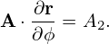

Note that, on both an irrational surface and a rational surface, there are infinite number of magnetic field lines that are not connected with each other (it is wrong to say there is only one magnetic field line on a irrational surface). Consider a field f that satisfies B ⋅∇f = 0, the value f is a constant along any one of the magnetic field lines. Now comes the question: whether the values of f on different field lines are equal to each other? To answer this question, we can choose a direction different from B on the magnetic surface and examine whether Ψ is constant or not along this direction, i.e, whether k ⋅∇f equals zero or not, where k is the chosen direction. For axsiymmetric magnetic surfaces, it is ready to see that k =  is a direction in the magnetic surface and it is usually not identical with B∕B. Then we obtain
|
| (548) |
If f is independent of ϕ, then k⋅∇Ψ = 0. Combining with the fact that B⋅∇f = 0 and the fact that B and k are two different directions on the magnetic surfaces, we know that f is constant on the surface, i.e., the values of f on different field lines are equal to each other. If f is non-axisymmetric, then we know the values of f on different magnetic field lines on the same magnetic surface are not equal to each other.
This reasoning is for the case of axsiymmetric magnetic surfaces. It is ready to do the same reasoning for non-axisymmetrica magnetic surface after we find a convenient direction k on the magnetic surface.
[check***As discussed in Sec. 3.2, the force balance equation of axisymmetric plasma requires that B ⋅∇g = 0. From this and the fact B ⋅∇Ψ = 0, we conclude that g is a function of Ψ, i.e., g = g(Ψ). However, this reasoning is not rigorous. Note the concept of a function requires that a function can not be a one-to-more map. This means that g = g(Ψ) indicates that the values of g must be equal on two different magnetic field lines that have the same value of Ψ. However, the two equations B⋅∇g = 0 and B⋅∇Ψ = 0 do not require this constraint. To examine whether this constraint removes some equilibria from all the possible ones, we consider a system with an X point. Inside one of the magnetic islands, we use
 | (549) |
and inside the another, we use
 | (550) |
Then solve the two GS equations respectively within the boundary of the two islands. It is easy to obtain two magnetic surfaces that have the same value of Ψ respectively inside the two islands. Equations (549) and (550) indicate that the values of g on the two magnetic surfaces are different from each other. It is obvious the resulting equilibrium that contain the two islands can not be recovered by directly solving a single GS equation with a given function g(Ψ).**check]